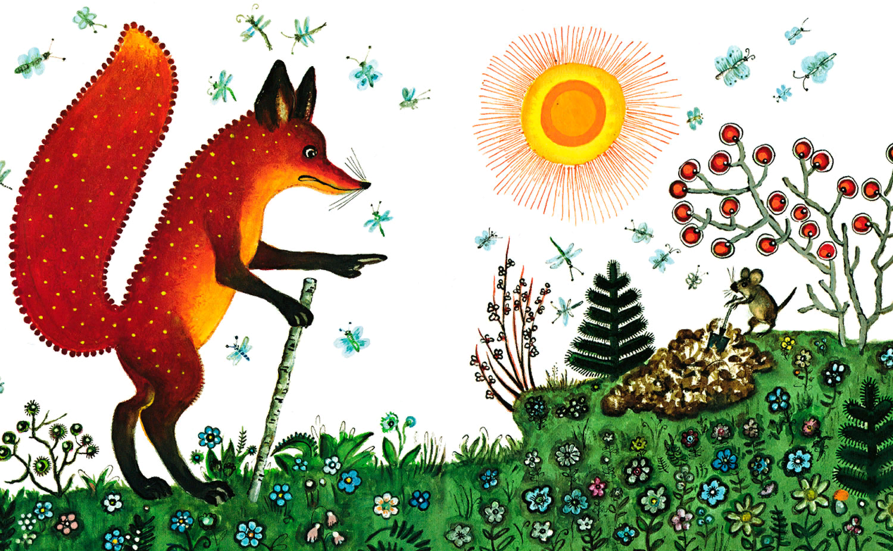
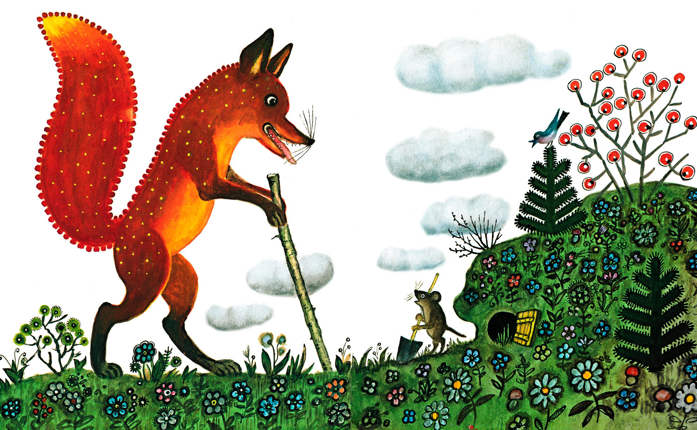
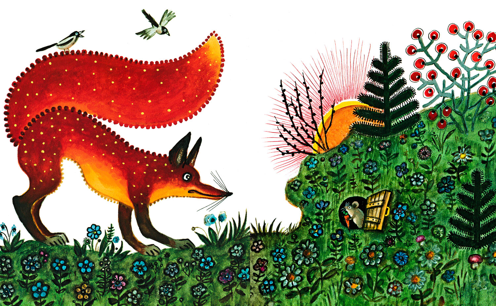
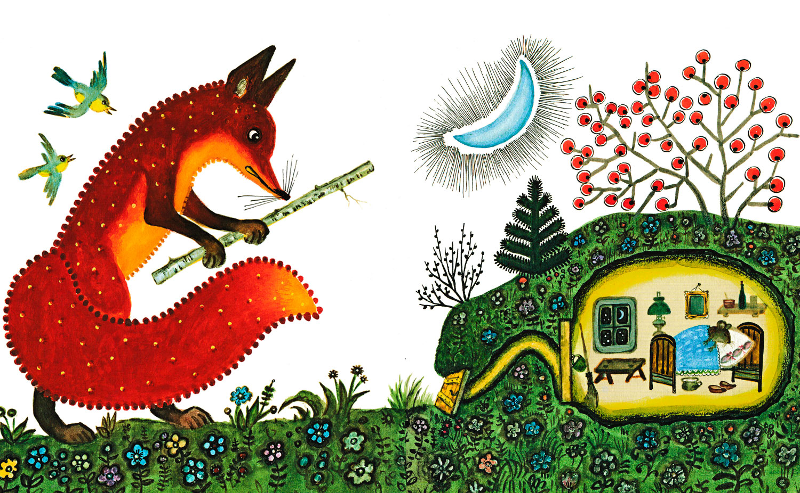
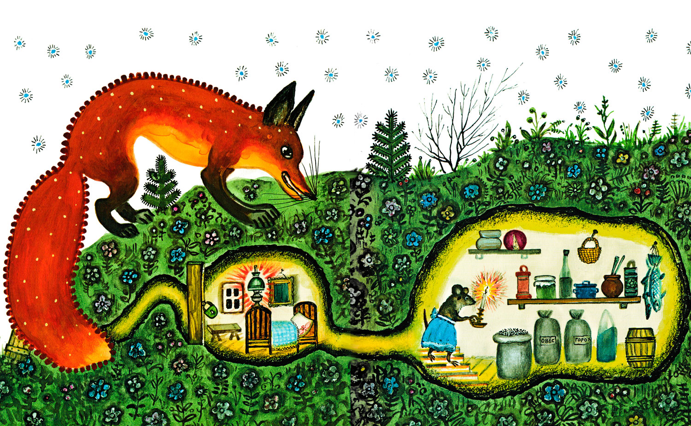
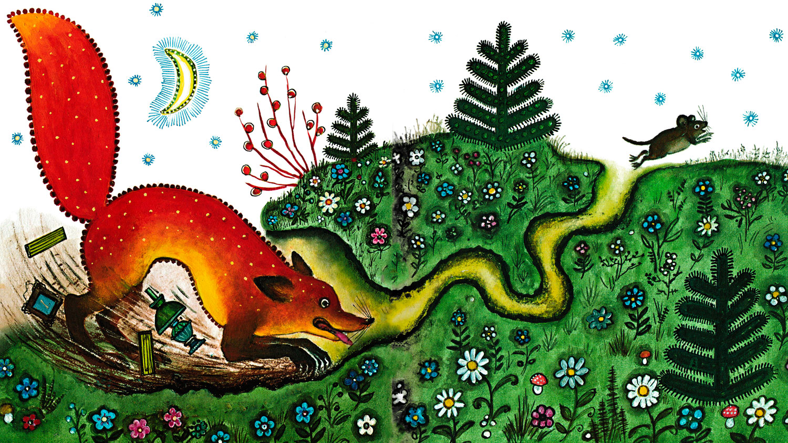

Лис и мышонок
Виталий Бианки
— Мышонок, мышонок, отчего у тебя нос грязный?
— Землю копал.
— Для чего землю копал?
— Норку делал.

— Для чего норку делал?
— От тебя, лис, прятаться.

— Мышонок, мышонок, а я тебя подстерегу!
— А у меня в норке спаленка.

— Кушать захочешь — вылезешь!
— А у меня в норке кладовочка.

— Мышонок, мышонок, а ведь я твою норку разрою!
— А я от тебя в отнорочек — и был таков!
